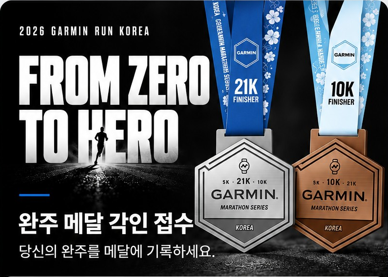

2026 GARMIN RUN KOREA 완주 메달 각인 접수
01 / INFORMATION
정보 입력
메달에 새길 이름과 완주 기록을 입력해 주세요.
ⓘ
QR은 현장에서 이름과 기록을 전달하는 용도입니다.
각인 전 직원과 내용을 한 번 더 확인해 주세요.
02 / READY TO SCAN
직원에게 QR을 보여주세요.
화면 밝기를 높이면 더 쉽게 인식할 수 있어요.
스캔 준비 완료
저장 버튼이 작동하지 않으면 화면을 캡처해 주세요.